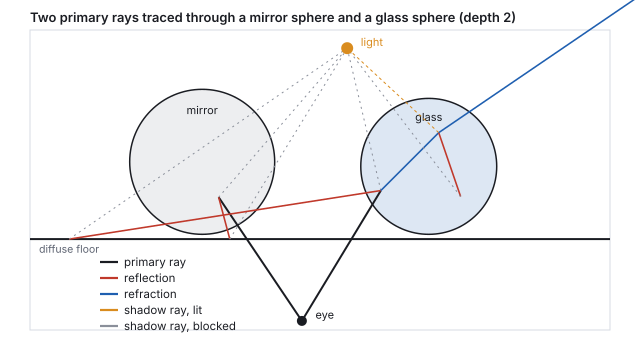
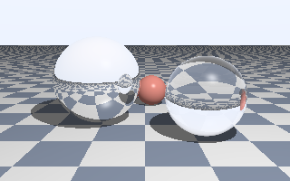
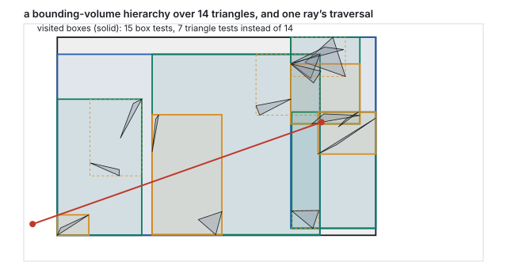
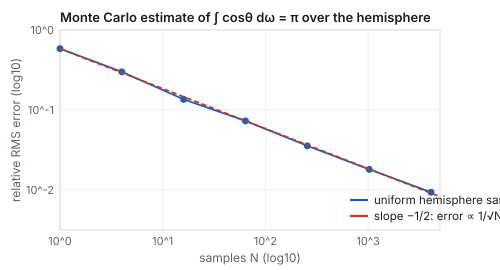
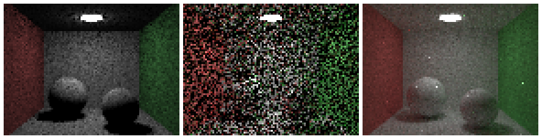

This chapter links to the course’s interactive demos and uses MathJax for its
formulas. Read it through the course website (or download the file and open it in a
browser); a Canvas inline preview will reach neither the demos nor the math.
All chapters.
Ray Tracing and Global Illumination
CSS 551 · Advanced 3D Computer Graphics · course text
Course text · rendering by following light backward: camera rays, intersections with spheres, triangles and boxes, Whitted’s recursive shadows, reflections and refractions, the acceleration structure that makes it feasible, Monte Carlo integration, and path tracing, with a Cornell box rendered by the chapter’s own code. Not tied to a lecture; pairs with the light-transport chapter, which owns the rendering equation and the BRDF.
The rasterizer of the earlier chapters asks, for each triangle, which pixels it covers. Ray tracing asks the opposite question, for each pixel, which surface it sees, by following a ray from the eye through the pixel into the scene. The reversal costs a search per pixel and buys everything the rasterizer cannot do directly: exact shadows, mirrors, glass, and, once the rays are allowed to bounce at random, the whole of global illumination. This chapter builds the machine from its parts. It casts a camera ray through the illumination demo’s sphere and solves the quadratic by hand, intersects a triangle and a box, traces Whitted’s reflection and refraction tree with Snell’s law and the Fresnel factor worked, renders a small scene with that recursion, and shows why a bounding-volume hierarchy turns a scene of seventy thousand triangles from impossible to routine. It then replaces the fixed tree by random sampling: a four-sample Monte Carlo estimate, the measured \(1/\sqrt{N}\) convergence, and a Cornell box path-traced at 8 and 512 samples per pixel next to the same scene lit directly, the difference being the indirect light a local model omits.
Definition (ray)
A ray is a point and a unit direction, \(\mathbf{r}(t) = \mathbf{o} + t\,\mathbf{d}\), \(t \ge 0\).
Intersecting it with a surface means finding the smallest positive \(t\) at which \(\mathbf{r}(t)\)
lies on the surface; \(t\) is then the distance to the hit.
The camera of the viewing chapter gives the ray through a pixel.
With the eye at \(\mathbf{e}\), the camera basis \(\mathbf{u}, \mathbf{v}, \mathbf{w}\) (right, up, and
backward), a vertical field of view \(\phi\) and a square image of \(S\) pixels, the pixel
\((p_x, p_y)\) has normalized coordinates
\(s_x = 2(p_x + \tfrac12)/S - 1\), \(s_y = 1 - 2(p_y + \tfrac12)/S\) in \([-1, 1]\), and its ray is
\[
\mathbf{d} = \mathrm{normalize}\bigl(s_x \tan\tfrac{\phi}{2}\,\mathbf{u} + s_y \tan\tfrac{\phi}{2}\,\mathbf{v} - \mathbf{w}\bigr), \qquad \mathbf{o} = \mathbf{e}.
\]
This is the projection matrix run backward: instead of mapping a point to a pixel, it maps a pixel
to the line of points that project there. No matrix is needed, and no perspective divide: the
perspective is in the fan of directions.
Worked example (the ray through the marked point’s pixel)
The illumination demo’s camera at \(\mathbf{e} = (3, 3, 6)\) looking at the origin, with
\(\phi = 28^\circ\) and \(S = 150\), has basis \(\mathbf{u} = (0.894, 0, -0.447)\),
\(\mathbf{v} = (-0.183, 0.913, -0.365)\), \(\mathbf{w} = (0.408, 0.408, 0.816)\) and
\(\tan 14^\circ = 0.2493\). The marked point \((0.693, 0.693, 0.693)\) projects to pixel \((89, 62)\)
(its pixel in the illumination chapter’s figure). That pixel’s center has
\((s_x, s_y) = (0.1933, 0.1667)\), so
\(\mathbf{d} = \mathrm{normalize}(0.0482\,\mathbf{u} + 0.0416\,\mathbf{v} - \mathbf{w}) = (-0.372, -0.370, -0.852)\),
pointing from the camera toward the origin and slightly to the camera’s left and up, where the
marked point sits.
2 · Intersections: sphere, triangle, box
Ray against a sphere
A sphere of center \(\mathbf{c}\) and radius \(r\): substitute the ray into \(|\mathbf{p} - \mathbf{c}|^2 = r^2\).
With \(\mathbf{m} = \mathbf{o} - \mathbf{c}\) and unit \(\mathbf{d}\),
\[
t^2 + 2(\mathbf{m}\cdot\mathbf{d})\,t + (\mathbf{m}\cdot\mathbf{m} - r^2) = 0, \qquad
t = -b \pm \sqrt{b^2 - c}, \quad b = \mathbf{m}\cdot\mathbf{d},\; c = \mathbf{m}\cdot\mathbf{m} - r^2.
\]
A negative discriminant is a miss; otherwise the smaller positive root is the entry point and the
larger the exit. The normal at a hit \(\mathbf{p}\) is \((\mathbf{p} - \mathbf{c})/r\).
Worked example (the demo’s sphere, hit and miss)
For the ray of Section 1 and the sphere \(r = 1.2\) at the origin, \(\mathbf{m} = \mathbf{e}\), so
\(b = \mathbf{e}\cdot\mathbf{d} = 3(-0.372) + 3(-0.370) + 6(-0.852) = -7.334\) and
\(c = 54 - 1.44 = 52.56\). The discriminant \(b^2 - c = 53.78 - 52.56 = 1.222\) is positive:
\(t = 7.334 \mp 1.106\), entry at \(t = 6.228\), exit at \(8.439\). The hit is
\(\mathbf{e} + 6.228\,\mathbf{d} = (0.683, 0.698, 0.697)\), within 0.012 of the marked point (the pixel
center is not exactly the point’s projection), and the normal there is the hit divided by 1.2.
Pixel \((20, 20)\) near the image corner gives \(b = -7.119\) and \(b^2 - c = -1.887\): no real root, the
ray misses the sphere and sees the background.
Ray against a triangle, and against a box
A triangle \(\mathbf{A}\mathbf{B}\mathbf{C}\) with normal \(\mathbf{n} = (\mathbf{B}-\mathbf{A})\times(\mathbf{C}-\mathbf{A})\):
first the plane, \(t = (\mathbf{A} - \mathbf{o})\cdot\mathbf{n} / (\mathbf{d}\cdot\mathbf{n})\), then the
inside test on the hit point with the three edge functions of
the rasterization chapter, which also yield the barycentric
weights for interpolating the vertex attributes. An axis-aligned box \([x_0, x_1]\times[y_0, y_1]\times[z_0, z_1]\)
is three slabs: for each axis the ray is inside the slab for \(t \in [(x_0 - o_x)/d_x,\; (x_1 - o_x)/d_x]\)
(sorted); the ray hits the box exactly when the three intervals overlap, entering at the largest lower
bound and leaving at the smallest upper bound.
Worked example (a triangle and a box)
Triangle \(\mathbf{A} = (0,0,0)\), \(\mathbf{B} = (2,0,0)\), \(\mathbf{C} = (0,2,0)\), normal \((0,0,1)\); ray
from \((0.5, 0.5, 1)\) straight down, \(\mathbf{d} = (0, 0, -1)\). Plane: \(t = (0 - 1)/(-1) = 1\), hit
\((0.5, 0.5, 0)\); barycentric weights \((0.5, 0.25, 0.25)\), all positive, inside. The ray from
\((1.5, 1.5, 1)\) hits the plane at \((1.5, 1.5, 0)\), where the edge function of \(\mathbf{B}\mathbf{C}\)
is \(-2\): outside, beyond the hypotenuse. The unit box \([0,1]^3\) and the ray from \((-1, 0.5, 0.5)\)
with \(\mathbf{d} = (0.981, 0.196, 0)\): the \(x\) slab gives \(t \in [1.02, 2.04]\), the \(y\) slab
\(t \in [-2.55, 2.55]\), and \(d_z = 0\) with \(o_z\) inside the \(z\) slab imposes nothing; the overlap is
\([1.02, 2.04]\), so the ray enters at \(t = 1.02\), at \((0, 0.7, 0.5)\) on the box’s left face.
A ray tracer’s inner loop is these three routines. Everything else in a scene is either
triangles (meshes) or is tested through a box around it, which is Section 4.
3 · Whitted ray tracing: shadows, mirrors, glass
Appel cast rays in 1968 to find visible surfaces and shadows. Whitted’s 1980 algorithm made the
hit point itself a source of rays: at each hit, shade with the local model of
the illumination chapter, but first send a shadow ray toward
each light and use the light only if nothing blocks it; then, for a reflective surface, send a
reflection ray in the mirror direction and add what it sees; for a transparent one, send a
refraction ray bent by Snell’s law and add that too. Each secondary ray is traced by the
same routine, so the image is a recursion, a tree of rays per pixel, cut off at a maximum depth.
Reflection, refraction, Fresnel
For incoming direction \(\mathbf{d}\) and unit normal \(\mathbf{n}\) facing the ray, the reflection is
\(\mathbf{d} - 2(\mathbf{d}\cdot\mathbf{n})\,\mathbf{n}\) (the illumination chapter’s \(\mathbf{R}\) with the
sign of \(\mathbf{L}\) reversed). Refraction from index \(n_1\) into \(n_2\) obeys Snell’s law
\(n_1 \sin\theta_1 = n_2\sin\theta_2\); with \(\eta = n_1/n_2\) and \(\cos\theta_1 = -\mathbf{d}\cdot\mathbf{n}\),
\[
\mathbf{t} = \eta\,\mathbf{d} + \bigl(\eta\cos\theta_1 - \sqrt{1 - \eta^2(1 - \cos^2\theta_1)}\bigr)\,\mathbf{n},
\]
and when the square root’s argument is negative there is no refracted ray: total internal
reflection. The split between reflected and refracted energy is the Fresnel factor, approximated by
Schlick as \(F = F_0 + (1 - F_0)(1 - \cos\theta_1)^5\) with \(F_0 = \bigl((n_1 - n_2)/(n_1 + n_2)\bigr)^2\).
Worked example (glass)
Air to glass, \(n_2 = 1.5\): a ray at \(30^\circ\) from the normal refracts to
\(\arcsin(\sin 30^\circ / 1.5) = \arcsin 0.333 = 19.47^\circ\); at \(60^\circ\), to \(35.26^\circ\). Glass to
air the angles reverse, and the exit angle reaches \(90^\circ\) at the critical incidence
\(\arcsin(1/1.5) = 41.81^\circ\); beyond it the ray stays inside. \(F_0 = (0.5/2.5)^2 = 0.04\): glass
reflects 4 % head-on, 4.2 % at \(45^\circ\), 7 % at \(60^\circ\), 41 % at \(80^\circ\), and 92 % at
\(89^\circ\), which is why a window is a mirror at a grazing angle and nearly invisible face-on. A
Whitted tracer weights the reflection ray by \(F\) and the refraction ray by \(1 - F\).

Two primary rays traced to depth 2 in a flat scene, by this chapter’s code: 13 ray segments in all, 6 of them shadow rays. The ray into the glass sphere refracts on entry, splits again inside, and refracts on exit.

The chapter’s Whitted renderer: 64,000 primary rays at depth 4 over three spheres and a plane, a point light with shadow rays, Phong shading, mirror reflection and Fresnel-weighted glass. The upside-down floor in the mirror sphere and the inverted view through the glass are the recursion at work.
What the picture has that the rasterizer lacks: shadows that are exact by construction (a shadow ray
either hits something or does not), reflections of things off-screen, and refraction that shows the
scene through the sphere. What it lacks is everything soft: the shadows have hard edges because the
light is a point, the mirror is perfect because there is one reflection ray, the floor under the
spheres is not tinted by them because a diffuse hit sends no further rays. Those are the limits of
following one ray per event, and Sections 5 and 6 remove them by sending many.
4 · Acceleration: the bounding-volume hierarchy
Every ray of every kind must find its nearest hit, and the naive way tests every object. For the
bunny of the meshes chapter at \(1920\times1080\) with three rays per
pixel (primary, shadow, reflection), that is \(2{,}073{,}600 \times 3 \times 69{,}451 \approx 4.3\times10^{11}\)
triangle tests for one frame. The fix is to test boxes before triangles, hierarchically.
Definition (bounding-volume hierarchy)
A binary tree whose every node holds the axis-aligned box of all the primitives below it; the
leaves hold a few primitives each. It is built by splitting a node’s primitives into two
groups (by the median of their centroids along the box’s longest axis, or by minimizing the
expected cost of a ray visiting the children) and recursing. A ray traverses it by testing a
node’s box and descending only on a hit, testing primitives only at the leaves it reaches, and
pruning any subtree whose box lies beyond the nearest hit found so far.

A three-level hierarchy over 14 triangles, built by median split, and one ray’s traversal: 15 box tests and 7 triangle tests, against 14 triangle tests by brute force, with the same nearest hit at \(t = 7.09\).
Worked example (what the tree buys)
On the small scene of the figure the saving is modest: 7 triangle tests instead of 14, at the price of
15 box tests. The saving is in the scaling. A balanced tree over \(T\) primitives has depth
\(\log_2 T\), and a ray that hits few things visits a few nodes per level, so its cost is
\(O(\log T)\) instead of \(O(T)\). For the bunny, \(\log_2 69{,}451 = 16.1\): on the order of
\(2\times17\) box tests and a handful of triangle tests per ray, roughly \(2\times10^8\) tests for the
frame above instead of \(4\times10^{11}\), two thousand times fewer. Building the tree costs
\(O(T\log T)\) once, or once per frame for deforming geometry, which is what the dedicated hardware in
a modern GPU does.
Alternatives partition space rather than objects: a uniform grid (cheap to build, poor when objects
cluster) or a k-d tree (splits space by axis-aligned planes; excellent traversal, harder to update).
Production tracers use BVHs, and the acceleration structure is why ray tracing scales to scenes of
billions of triangles while the rasterizer must touch each triangle every frame.
5 · Monte Carlo integration
Soft shadows, glossy reflections, and light bouncing between diffuse surfaces are all integrals: over
the area of a light, over a lobe of directions, over the whole hemisphere above a point. The
rendering equation of the light-transport
chapter is that integral in its general form. It has no closed form for any scene of interest,
and the way to evaluate it is to sample it.
Definition (Monte Carlo estimator)
To estimate \(I = \int f(\omega)\,d\omega\), draw \(N\) random directions \(\omega_i\) from a density
\(p(\omega)\) and average
\[
\hat I = \frac1N \sum_{i=1}^{N} \frac{f(\omega_i)}{p(\omega_i)}.
\]
The estimate is unbiased (its expectation is \(I\)) for any \(p\) that is positive wherever \(f\) is,
and its standard deviation falls as \(1/\sqrt N\). Choosing \(p\) close to the shape of \(f\)
(importance sampling) reduces the constant; choosing \(p \propto f\) makes every sample exact.
Worked example (four samples of the cosine integral)
The irradiance from a uniform sky of radiance 1 is \(\int_{H} \cos\theta\,d\omega = \pi\) over the
hemisphere. Sampling directions uniformly, \(p = 1/2\pi\), four draws with cosines
\(0.720, 0.456, 0.763, 0.487\) sum to \(2.426\), and the estimate is
\(2\pi \times 2.426 / 4 = 3.811\), 21 % above \(\pi\). With cosine-weighted sampling, \(p = \cos\theta/\pi\),
each term is \(\cos\theta_i / (\cos\theta_i/\pi) = \pi\) exactly and any number of samples gives \(\pi\):
the integrand has been folded into the sampling. Real integrands are not so kind, but cosine-weighted
directions are the standard choice for diffuse bounces because the cosine is always a factor.

Measured error of the uniform estimate, 200 trials at each \(N\). Four times the samples halves the error: 0.30 at 4, 0.136 at 16, 0.073 at 64, 0.0094 at 4096.
The \(1/\sqrt N\) law is the economics of every renderer in this section. Halving the noise costs
four times the samples; going from a preview to a clean frame is not a few more samples but a few
hundred times more. It is also why the noise is honest: an unbiased estimator’s error is random,
with no systematic darkening or brightening, and it averages away.
6 · Path tracing and the Cornell box
Path tracing (Kajiya, 1986) applies the estimator to the rendering equation recursively. At a hit
point, estimate the direct light by sampling a point on each light and sending a shadow ray; then
estimate the indirect light by choosing one random bounce direction, tracing it, and weighting what it
returns by the BRDF and cosine over the density. Each pixel’s value is the average over many
such paths. Because the bounce is a single random direction, the path does not branch; it is a
random walk from the eye that ends when it escapes the scene or, to keep it finite without bias, when
Russian roulette terminates it: continue with probability \(q\) and divide the surviving
contribution by \(q\).

The chapter’s Cornell box (\(96\times72\) pixels, enlarged): direct light only at 256 samples per pixel, then path traced at 8 and at 512 samples, maximum depth 6, Russian roulette with continuation probability 0.7 after two bounces. About a minute of computation for the three.
Worked example (what one path contributes)
A path leaves the eye, hits the floor (albedo \(k_1\)), bounces to the red wall (albedo \(k_2\)), and
there its shadow ray sees the light with radiance \(L_e\), geometric factor \(G\) and light-sampling
density \(p_A\). With cosine-weighted bounces (density \(\cos\theta/\pi\)) and a diffuse BRDF
\(k/\pi\), the bounce weight is \((k/\pi)\cos\theta / (\cos\theta/\pi) = k\): each bounce simply
multiplies by the albedo. The path’s indirect contribution to the pixel is
\(k_1 \cdot \bigl[\text{direct at the wall}\bigr] = k_1\, k_2\, L_e\, G / p_A\), and if roulette with
\(q = 0.7\) let the bounce happen, the value is divided by 0.7 to compensate for the 30 % of paths
that were stopped. Averaged over hundreds of such paths, the floor near the red wall comes out pink:
color bleeding, which the direct-only panel cannot show because its paths stop at the floor.
Read the three panels against the local model. Direct light only is the illumination chapter with
area-light shadows: the ceiling is black (the light faces down), the shadows are black, the walls
are their own color and nothing else. At 8 samples the path tracer already has every effect, buried
in noise; at 512 the noise has fallen by \(\sqrt{64} = 8\) and the effects are legible: the ceiling is
lit from below, the shadows are soft and filled, the spheres pick up red on the left and green on the
right. Nothing in the algorithm names any of these effects. They are what the integral contains.
Production path tracers add what the chapter’s does not: importance sampling of glossy BRDFs,
next-event estimation with many lights, bidirectional and Metropolis variants for hard paths
(caustics through glass), and denoisers that trade the last factor of ten in samples for a learned
filter. Every one of them is the same estimator with a better \(p\).
7 · Radiosity, photon maps, and real-time rays
Radiosity (Goral, Torrance, Greenberg and Battaile, 1984) solved the diffuse case
before path tracing was practical: divide the scene into patches, compute a form factor for
every pair (the fraction of light leaving one that arrives at the other, a geometric integral), and
solve the resulting linear system for each patch’s brightness. It is view-independent, so the
solution can be baked into vertex colors or lightmaps and walked through in real time, which is what
every game’s precomputed lighting still is. Its cost grows as the square of the patch count and it
handles only diffuse surfaces.
Photon mapping (Jensen, 1996) traces paths from the lights instead of the eye,
stores the hits in a spatial map, and estimates radiance at a point from the density of nearby
photons. It handles caustics, which eye-first path tracing finds only by luck, at the price of a
blurred, biased estimate.
Real-time ray tracing arrived in hardware in 2018: GPUs with dedicated units for
box and triangle tests traverse BVHs at billions of rays per second, enough for one or a few samples
per pixel per frame. Games use them for shadows, reflections and one bounce of indirect light, run a
denoiser over the noisy result, and rasterize everything else. The hybrid is the current state of
the field: the rasterizer for visibility, rays for the effects it cannot do, and the estimator of
Section 5 underneath both.
Papers
A. Appel, “Some Techniques for Shading Machine Renderings of Solids,” AFIPS Spring Joint
Computer Conference, 1968. T. Whitted, “An Improved Illumination Model for Shaded Display,”
Communications of the ACM 23(6), 1980. R. Cook, T. Porter and L. Carpenter, “Distributed Ray
Tracing,” SIGGRAPH 1984. C. Goral, K. Torrance, D. Greenberg and B. Battaile, “Modeling the
Interaction of Light Between Diffuse Surfaces,” SIGGRAPH 1984. J. Kajiya, “The Rendering
Equation,” SIGGRAPH 1986. H. W. Jensen, “Global Illumination Using Photon Maps,”
Eurographics Workshop on Rendering, 1996. E. Veach, Robust Monte Carlo Methods for Light
Transport Simulation, PhD thesis, Stanford, 1997.
8 · Exercises
Exercise 1 (camera rays)
For the camera of Section 1, which pixel does the center of the image correspond to, and what is its ray direction?
Solution
Pixel \((74.5, 74.5)\), that is, the corner shared by pixels 74 and 75: \(s_x = s_y = 0\), so \(\mathbf{d} = -\mathbf{w} = (-0.408, -0.408, -0.816)\), straight at the origin. It hits the sphere at \(t = |\mathbf{e}| - 1.2 = 7.348 - 1.2 = 6.148\), the nearest point of the sphere to the camera.
Exercise 2 (a sphere from inside)
The ray from the origin in direction \((0, 1, 0)\) against the demo’s sphere. Which root is the hit?
Solution
\(\mathbf{m} = 0\), \(b = 0\), \(c = -1.44\): \(t = \pm1.2\). The negative root is behind the origin; the hit is \(t = 1.2\) at \((0, 1.2, 0)\), from inside, and the outward normal \((0, 1, 0)\) faces away from the ray. A tracer must flip the normal when \(\mathbf{d}\cdot\mathbf{n} > 0\), as the glass code does on exit.
Exercise 3 (Snell)
A ray inside glass hits the surface at \(50^\circ\). What happens? At \(30^\circ\)?
Solution
\(50^\circ > 41.81^\circ\): total internal reflection, no refracted ray. At \(30^\circ\): \(\sin\theta_2 = 1.5\sin30^\circ = 0.75\), \(\theta_2 = 48.6^\circ\), bending away from the normal on the way out.
Exercise 4 (the tree)
A scene of one million triangles, leaves of 4. How deep is a balanced BVH, and roughly how many box tests does a ray that hits one leaf make?
Solution
\(2^{18} = 262{,}144\) leaves need depth 18. Visiting one child per level after the root: about \(2\times18 = 36\) box tests (both children are tested at each level, one is descended) and 4 triangle tests, against a million.
Exercise 5 (Monte Carlo)
The estimate at 64 samples has relative error 0.073. How many samples for 0.01? For 0.001?
Solution
Error scales as \(1/\sqrt N\): \(N = 64 \times (0.073/0.01)^2 = 3{,}411\), about 3,400; for 0.001, \(3.4\times10^5\). The chapter’s run at 4096 samples measured 0.0094, in agreement.
Exercise 6 (roulette)
With continuation probability \(q = 0.7\) after depth 2 and a hard cutoff at depth 6, what fraction of paths reach depth 6, and what is the expected number of bounces after depth 2?
Solution
Reaching depth 6 needs four survivals: \(0.7^4 = 0.24\). The expected number of extra bounces before termination is \(q/(1-q) = 2.33\) without the cutoff, slightly less with it. The paths that were stopped contribute nothing, and the survivors are scaled by \(1/0.7\) at each survival, so the average is unchanged: roulette adds variance, not bias.